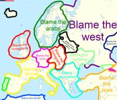

0


0


0

An anonymous reader shares a report: A Cloudflare engineer says he has implemented 94% of the Next.js API by directing Anthropic's Claude, spending about $1,100 on tokens. The purpose of the experimental project was not to show off AI coding, but to address an issue with Next.js, the popular React-based framework sponsored by Vercel.
According to Cloudflare engineering director Steve Faulkner, the Next.js tooling is "entirely bespoke... If you want to deploy it to Cloudflare, Netlify, or AWS Lambda, you have to take that build output and reshape it into something the target platform can actually run."
The Next.js team is addressing this following numerous complaints that deploying the framework with full features on platforms other than Vercel is too difficult, with a feature in progress called deployment adapters. "Vercel will use the same adapter API as every other partner," the company said when introducing the planned feature last year.
Read more of this story at Slashdot.
0
An anonymous reader shares a report: Some Uber employees have built an AI clone of CEO Dara Khosrowshahi -- internally dubbed "Dara AI" -- and have been using it to rehearse and fine-tune presentations before delivering them to the actual Khosrowshahi, he revealed on a recent podcast.
Khosrowshahi said a team member told him that some teams "make the presentation to the Dara AI as a prep for making a presentation to me," and that the bot helps them adjust their slides and sharpen their delivery. Asked by the podcast host whether employees might eventually show Dara AI to the board, Khosrowshahi laughed but noted that AI models still can't process and act on new information the way executives do. "When the models can learn in real-time, that is the point at which I'm going to think that, yeah, we are all replaceable," he said.
Read more of this story at Slashdot.
Anthropic last week promoted Claude Code Security, a research preview capability that uses its Claude Opus 4.6 model to hunt for software vulnerabilities, claiming its red team had surfaced over 500 bugs in production open-source codebases -- but security researchers say the real bottleneck was never discovery.
Guy Azari, a former security researcher at Microsoft and Palo Alto Networks, told The Register that only two to three of those 500 vulnerabilities have been fixed and none have received CVE assignments. The National Vulnerability Database already carried a backlog of roughly 30,000 CVE entries awaiting analysis in 2025, and nearly two-thirds of reported open-source vulnerabilities lacked an NVD severity score.
The curl project closed its bug bounty program because maintainers could no longer handle the flood of poorly crafted reports from AI tools and humans alike. Feross Aboukhadijeh, CEO of security firm Socket, said discovery is becoming dramatically cheaper but validating findings, coordinating with maintainers, and developing architecture-aligned patches remains slow, human-intensive work.
Read more of this story at Slashdot.
An anonymous reader shares a report: Brian Merchant, writing for Blood in the Machine, reports that people across the United States are dismantling and destroying Flock surveillance cameras, amid rising public anger that the license plate readers aid U.S. immigration authorities and deportations.
Flock is the Atlanta-based surveillance startup valued at $7.5 billion a year ago and a maker of license plate readers. It has faced criticism for allowing federal authorities access to its massive network of nationwide license plate readers and databases at a time when U.S. Immigration and Customs Enforcement is increasingly relying on data to raid communities as part of the Trump administration's immigration crackdown.
Flock cameras allow authorities to track where people go and when by taking photos of their license plates from thousands of cameras located across the United States. Flock claims it doesn't share data with ICE directly, but reports show that local police have shared their own access to Flock cameras and its databases with federal authorities. While some communities are calling on their cities to end their contracts with Flock, others are taking matters into their own hands.
Read more of this story at Slashdot.
The screeching sound that Scotch tape makes when you rip it off a surface -- that fingernails-on-a-chalkboard noise most people try not to think about -- is produced by shock waves from micro-cracks that travel across the peeling tape at supersonic speeds, according to a new paper published in Physical Review E.
Researchers led by Sigurdur Thoroddsen of King Abdullah University in Saudi Arabia used simultaneous high-speed imaging and synchronized microphones to capture both the propagating fractures and the sound waves they generate in the surrounding air. The team's earlier work, in 2010, had identified a sequence of transverse cracks racing across the width of the adhesive during peeling, and a 2024 follow-up established a direct correspondence between those cracks and the screeching sound, but neither study pinpointed a mechanism.
The new findings show that a partial vacuum forms between the tape and the surface as each crack opens, and because the crack moves faster than air can rush in to fill the void, the vacuum travels along until it reaches the tape's edge and collapses into the stationary air outside, producing a discrete sound pulse.
Read more of this story at Slashdot.
An anonymous reader shares a report: Japan's Fair Trade Commission raided Microsoft Japan's offices on Wednesday as part of an investigation into whether it improperly restricted customers of its Azure platform from using rival cloud services, a source with direct knowledge of the matter told Reuters.
The source said Japan's antitrust authorities would also be seeking clarification from Microsoft's parent company in the United States. Microsoft Japan is suspected of setting conditions that effectively shut out other services by limiting access to popular services on other cloud platforms, the source said.
Read more of this story at Slashdot.
Anthropic, the AI company that has long positioned itself as the industry's most safety-conscious research lab, is dropping the central commitment of its Responsible Scaling Policy -- a 2023 pledge to never train an AI system unless it could guarantee beforehand that its safety measures were adequate. "We didn't really feel, with the rapid advance of AI, that it made sense for us to make unilateral commitments ... if competitors are blazing ahead," chief science officer Jared Kaplan told TIME.
The overhauled policy, approved unanimously by CEO Dario Amodei and Anthropic's board, instead commits the company to matching or surpassing competitors' safety efforts and to delaying development only if Anthropic considers itself to be leading the AI race and believes catastrophic risks are significant.
The company also plans to publish detailed "Risk Reports" every three to six months and release "Frontier Safety Roadmaps" laying out future safety goals. Chris Painter, director of policy at the AI evaluation nonprofit METR, who reviewed an early draft, told TIME the shift signals that Anthropic "believes it needs to shift into triage mode with its safety plans, because methods to assess and mitigate risk are not keeping up with the pace of capabilities."
Read more of this story at Slashdot.
Apple's forthcoming touch-screen MacBook Pro models -- the company's first-ever laptops to support touch input -- will feature the iPhone's Dynamic Island at the center top of their OLED displays and a new interface that dynamically adjusts between touch and point-and-click controls, according to a Bloomberg report citing people familiar with the plans.
The 14-inch and 16-inch models, code-named K114 and K116, are slated for release toward the end of 2026 and won't be part of Apple's product announcements in the first week of March. The redesigned interface brings up a contextual menu surrounding a user's finger when they touch a button or control, and enlarges menu bar items when tapped, adapting the available controls based on whether the input is touch or click.
Apple does not plan to position the machines as iPad replacements or describe them as touch-first; the physical design retains the full keyboard and large trackpad of the current MacBook Pro. Last year's Liquid Glass redesign in macOS Tahoe, which added more padding around icons and touch-optimized sliders in the control center, was partly groundwork for this shift.
Read more of this story at Slashdot.
Kalshi, the prediction market platform regulated by the Commodity Futures Trading Commission, has for the first time publicly disclosed the results of an insider trading investigation, naming an editor for YouTube's biggest creator as the offender.
The company identified Artem Kaptur, an editor for MrBeast, who it says traded around $4,000 on markets tied to the streamer and achieved "near-perfect trading success" on low-odds bets -- a pattern investigators flagged as suspicious. Kalshi froze Kaptur's account before he could withdraw any profits, fined him $20,000, suspended him for two years, and reported the case to the CFTC.
Read more of this story at Slashdot.
Tech companies ranging from 300-person startups to giants like Amazon, Google, Meta, Microsoft and Salesforce have moved beyond encouraging employees to use AI tools and are now actively tracking adoption and, in several cases, tying it to performance reviews. Google is factoring AI use into some software engineer reviews for the first time this year, and Meta's new performance review system will do the same -- it can track how many lines of code an engineer wrote with AI assistance.
Amazon Web Services managers have dashboards showing individual engineer AI-tool usage and consider adoption when evaluating promotions. About 42% of tech-industry workers said their direct manager expects AI use in daily work as of last October, up from 32% eight months earlier, according to AI consulting firm Section. At software maker Autodesk, CEO Andrew Anagnost acknowledged that some employees had been using initially blocked coding tools like Cursor stealthily -- and warned that AI holdouts "probably won't survive long term."
Read more of this story at Slashdot.
Seamus Blackley, one of the original founders of Xbox who helped convince Bill Gates and Steve Ballmer to back a console project more than 26 years ago, told GamesBeat in an interview that he believes Microsoft is quietly sunsetting the platform under the guise of an AI-driven leadership transition.
Microsoft recently announced that Asha Sharma, whose career has focused on AI and software as a service, will replace Phil Spencer as Xbox CEO, and that COO and president Sarah Bond is leaving the company. Blackley said he expects Sharma's role to be that of "a palliative care doctor who slides Xbox gently into the night," arguing that Satya Nadella's all-consuming bet on generative AI has turned every business unit -- Xbox included -- into a nail for the same hammer.
He compared the appointment to putting someone who doesn't like movies in charge of a major motion picture studio, and advised Sharma to either develop a genuine passion for games or find a way to leave the job soon.
Read more of this story at Slashdot.
A hacker exploited Anthropic's AI chatbot to carry out a series of attacks against Mexican government agencies, resulting in the theft of a huge trove of sensitive tax and voter information, according to cybersecurity researchers. From a report: The unknown Claude user wrote Spanish-language prompts for the chatbot to act as an elite hacker, finding vulnerabilities in government networks, writing computer scripts to exploit them and determining ways to automate data theft, Israeli cybersecurity startup Gambit Security said in research published Wednesday.
The activity started in December and continued for roughly a month. In all, 150 gigabytes of Mexican government data was stolen, including documents related to 195 million taxpayer records as well as voter records, government employee credentials and civil registry files, according to the researchers.
Read more of this story at Slashdot.
DVD and Blu-ray sales have been in freefall for years, but the decline is slowing considerably as Gen Z buyers turn to physical media and drive a measurable uptick at video rental stores and retailers across the U.S.
Overall disc sales fell just 9% last year after dropping more than 20% in both 2023 and 2024, according to the Digital Entertainment Group, and U.S. consumers spent 12% more on 4K UHD Blu-rays in 2025 than the prior year. The Criterion Collection, a leading boutique Blu-ray label, confirmed significant year-over-year sales increases that its president credits to younger customers.
Vidiots, a video store in Los Angeles, averaged 170 rentals a day in January 2026 -- its biggest month ever -- after loaning about 22,000 discs total in 2023 and roughly 50,000 in 2024. Barnes & Noble reported DVD and Blu-ray sales growth of "mid-double digits" over the past year.
Read more of this story at Slashdot.
An anonymous reader shares a report: Uber is one step closer to going airborne. On Wednesday, the company previewed its air taxi booking service ahead of an expected launch in Dubai later this year. The inaugural Uber Air program will let travelers book Joby Aviation's electric air taxis through a familiar process in the Uber app.
The experience of booking an air taxi will be much like reserving a four-wheeled Uber. In the app, after entering your destination, Uber Air will appear as an option for eligible routes. The Uber app will book a flight and an Uber Black to pick you up and drop you off at a Joby "vertiport." Joby's air taxis, built exclusively for city travel, can accommodate up to four passengers and luggage. (Uber says size and weight guidelines will be announced closer to launch.) The interior is about the size of an SUV and has "comfortable seating" with panoramic windows. They can travel up to 200 mph and have a range of up to 100 miles. Four battery packs and a triple-redundant flight computer are onboard for safety purposes.
Read more of this story at Slashdot.
HP has revealed that memory now accounts for 35% of the cost of materials it needs to build a PC, up from between 15 and 18% last quarter. And the company expects RAM's contribution will rise through the year. From a report: Speaking on the company's Q1 2026 earnings call, interim CEO Bruce Broussard said the company has secured long-term supply agreements for the year and also "qualified new suppliers [and] built in strategic inventory positions for key platforms and cut the time to qualify new material in half to accelerate our product configuration changes."
That sounds a lot like HP Inc is signing up new suppliers at a brisk pace. Broussard said the company has also "expanded lower-cost sourcing across our commodity basket, lowering logistics costs with agile end-to-end planning processes." The company is using its internal AI initiatives to power those new processes. The company is also "configuring our products and shaping demand to align the supply we have with our customer needs" and "taking targeted pricing actions to offset the remaining cost impact in close partnership with both our channel and direct customers."
Read more of this story at Slashdot.
Aisha S Gani / Bloomberg : Revolut says 58% of reported job scams globally came from Telegram in 2025, dwarfing other platforms for these cases, based on an analysis of 10B+ transactions — Most job scams reported to finance app Revolut Ltd. last year started their journey on the Telegram messaging platform …
Tracy Qu / Wall Street Journal : Baidu reports Q4 revenue down 4% YoY to ~$4.8B, its third consecutive quarter of revenue decline, and net profit down 66% YoY to ~$259M, below ~$374M est. — Fourth-quarter net profit dropped 66% from a year earlier — Baidu reported sharply lower profit, with revenue declining for a third consecutive quarter.
Vlad Savov / Bloomberg : OpenAI says ChatGPT refused to assist a user associated with Chinese law enforcement in planning an online campaign to discredit Japanese PM Sanae Takaichi — OpenAI said its ChatGPT AI service refused to assist an individual associated with Chinese law enforcement in planning an online campaign …
Financial Times : Analysis: super PACs for and against AI regulation have raised $265M ahead of the midterms, with pro-AI groups significantly outraising pro-regulation groups — Silicon Valley rivals in spending blitz for control of Congress and state capitols — Alex Bores was on the way to his wedding …
Jeremy Kahn / Fortune : London-based Dwelly, which aims to roll up independent UK real estate agencies and modernize their operations using AI, raised £32M in equity and £37M in debt — A startup founded by former Uber and Gett executives that is aiming to roll up independent real estate agencies across …
Nick Huber / Financial Times : Several UK consultants have left large firms to start AI consultancy startups, as growth in the country's AI consulting sector outpaces the broader market — A number of consultants have left big firms to create their own software companies to automate common and repetitive work
Tom Matsuda / Sifted : London-based digital bank Allica, which caters to over 30K SMBs across the UK, raised a $155M Series D from Ventura Capital and others at a $1.2B valuation — The funding comes from Ventura Capital, GLG, Sona AM and existing investors TCV and Blue Owl — Allica Bank has become Europe's newest unicorn …
Financial Times : A look at VW's robotaxi unit MOIA, which has 100 test vehicles across Germany, Norway, and the US, and plans to launch its robotaxis this year in LA with Uber — German carmaker plans to launch driverless taxis in the region next year, after Los Angeles launch with Uber
Bloomberg : Sources: Apple is in talks with Visa, Mastercard, and Indian banks ICICI, HDFC, and Axis as part of its plans to launch Apple Pay in India around mid-2026 — Apple Inc. is in discussions with key Indian banks and global card networks in preparation to start Apple Pay in the world's most populous country.
Alex Heath / Sources : Q&A with Skild AI CEO Deepak Pathak on building a general-purpose brain for robots, standing out among big tech's robotics efforts, the path to AGI, and more — Deepak Pathak has spent 15 years trying to solve one of the hardest problems in AI: getting machines to move through and manipulate the physical world.
Michelle Chan / Financial Times : Tech companies are increasingly turning to GPU-backed debt, a model pioneered by CoreWeave, using SPVs to shift debt off their balance sheets — Investors attracted by high yields as companies look to shift debt off their balance sheets — Tech companies are increasingly turning …
The Information : Sources: Amazon plans to invest up to $50B in OpenAI, $35B of which could hinge on an IPO or AGI milestone; OpenAI is discussing custom models for Amazon — Amazon's decision to invest up to $50 billion in OpenAI could hang on whether OpenAI goes public or reaches a loosely defined milestone known …
The Economic Times : Mumbai-based digital payments processor BillDesk agrees to acquire the Indian business of Worldline for an equity value of ~$70M, set to close in H2 2026 — Billdesk is set to acquire the India payments business of French payment giant Worldline for an estimated equity value of $70 million.
Tim Anderson / The Register : A Cloudflare engineer rebuilt Next.js from scratch in one week using AI, reimplementing 94% of its API and spending $1,100 on Claude tokens — Uses Vite and Claude to sidestep Vercel lock-in — A Cloudflare engineer says he has implemented 94 percent of the Next.js API by directing Anthropic's Claude …
Reece Rogers / Wired : Open-source tool Scrapling gains traction with OpenClaw users who want their bots to scrape sites without permission and has 200K+ downloads since its release — An open source project called Scrapling is gaining traction with AI agent users who want their bots to scrape sites without permission.
0